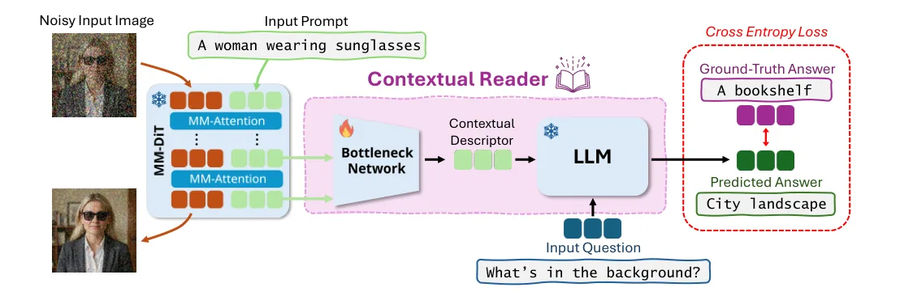
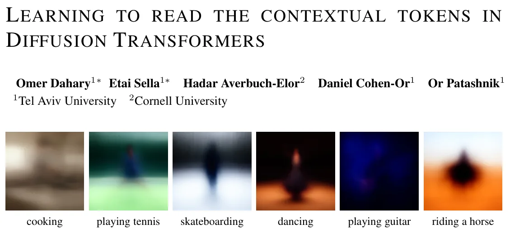
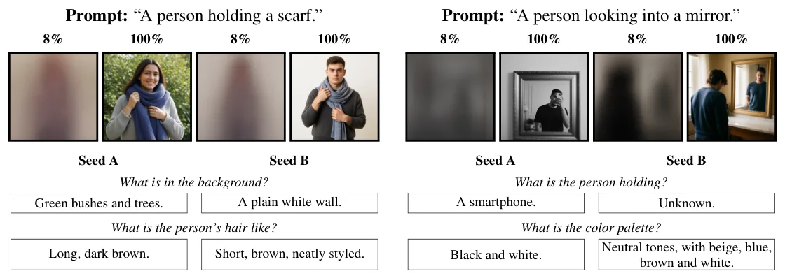
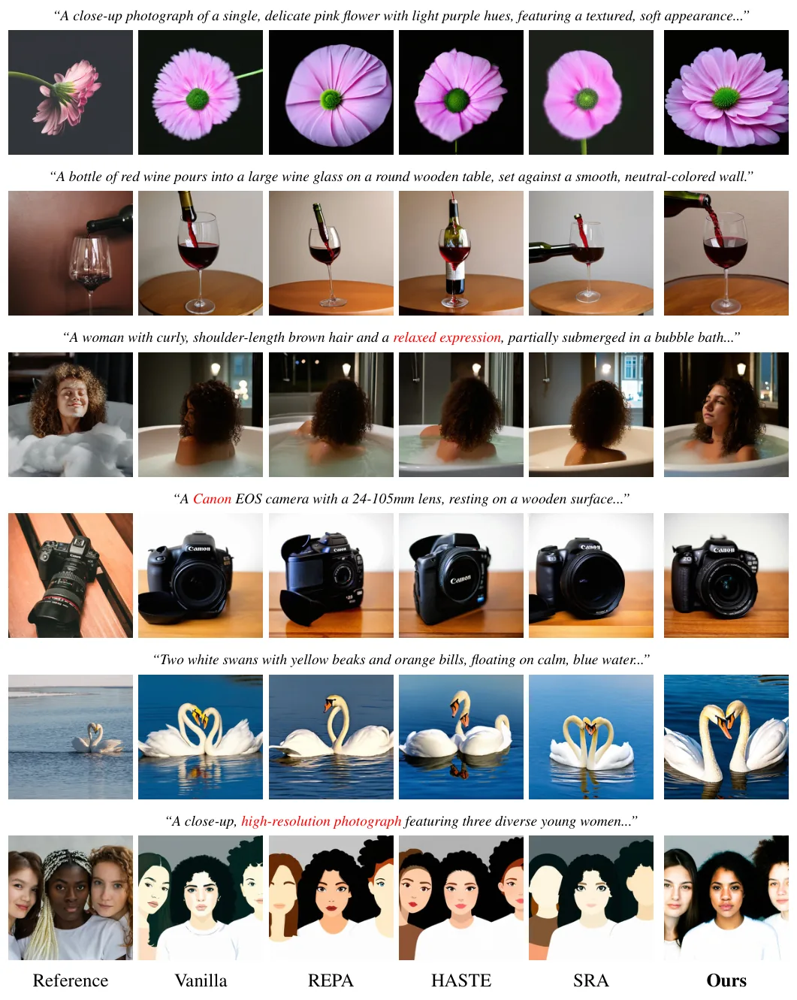

O problema: o que acontece do lado do texto?
Modelos de difusão multimodais (MM-DiTs) dominam hoje a geração de imagens e vídeos a partir de texto. Eles processam simultaneamente tokens visuais — que formam a imagem em evolução — e tokens de texto, que condicionam a geração. Enquanto os tokens visuais recebem supervisão explícita (o objetivo de denoising) e podem ser visualizados diretamente como imagens intermediárias, os tokens de texto seguem um caminho menos óbvio.
Nesses modelos, os tokens de texto não ficam fixos como vetores de condicionamento estáticos. A cada camada, eles são atualizados por atenção multimodal, absorvendo informação da representação visual em evolução. Trabalhos anteriores chamaram esses vetores atualizados de tokens contextuais. Embora essa troca cross-modal funcione bem na prática, ninguém sabe ao certo o que esses tokens contextuais codificam, nem como suas dinâmicas internas influenciam a imagem final.
Diferente dos tokens visuais, que têm correspondência espacial clara, os tokens contextuais não possuem estrutura explícita e não recebem supervisão dedicada. Isso os torna difíceis de interpretar. Resta em aberto: que informação visual eles carregam? Quando essa informação emerge? E, mais importante, ela pode ser lida e usada para melhorar a geração?
A ideia: interrogar o modelo em linguagem natural
O paper propõe um framework para ler diretamente o espaço contextual de MM-DiTs através de perguntas em linguagem natural. Em vez de analisar mapas de atenção ou vetores brutos, os autores treinam uma rede leve — o Contextual Reader — que projeta tokens contextuais intermediários no espaço de entrada de um Large Language Model (LLM) congelado.
O truque é simples: o LLM recebe apenas os tokens contextuais projetados e uma pergunta sobre a imagem emergente. Como ele não tem acesso direto aos pixels, qualquer resposta correta precisa vir da informação codificada nos próprios tokens contextuais. Isso força a rede de projeção (chamada Bottleneck Network) a extrair a semântica visual interna do modelo diretamente da representação textual.
Com isso, os pesquisadores conseguem fazer perguntas como 'O que essa pessoa está fazendo?' ou 'De que cor é o cabelo?' e obter respostas em texto plano, decodificadas diretamente dos tokens contextuais em qualquer momento da geração. É como ler a intenção generativa do modelo antes mesmo de a imagem ficar clara.

Como funciona o Contextual Reader
O método opera em um timestep escolhido durante o denoising. Nesse momento, os tokens contextuais de várias camadas do MM-DiT (congelado) são agregados pela Bottleneck Network em um Contextual Descriptor compacto. Esse descritor é então concatenado com uma pergunta em linguagem natural e alimentado a um LLM congelado, que prediz a resposta.
O treinamento usa pares de (imagem, pergunta, resposta) gerados por um Vision-Language Model (VLM) teacher. Para cada imagem do dataset, o VLM responde perguntas sobre atributos visuais (cor, posição, ação, etc.). Durante o treinamento, o MM-DiT gera uma trajetória de denoising para essa imagem, e o Contextual Reader aprende a prever as mesmas respostas do VLM a partir dos tokens contextuais em diferentes timesteps.
Crucialmente, o MM-DiT e o LLM permanecem congelados. Apenas a Bottleneck Network é treinada, usando perda de linguagem padrão. Isso garante que o leitor aprenda a extrair informação já presente nos tokens contextuais, sem alterar o comportamento do gerador. O resultado é um probe interpretável: se o leitor consegue responder uma pergunta, é porque a informação está codificada nos tokens contextuais naquele momento da geração.
O que os tokens contextuais revelam
A primeira descoberta é surpreendente: tokens contextuais codificam semântica rica da cena emergente muito cedo no denoising. Atributos específicos da geração — incluindo detalhes deixados vagos pelo prompt — já são acessíveis quando apenas 8% da trajetória foi percorrida, enquanto a predição visual ainda está ambígua.
Mais impressionante ainda: essa informação permanece decodificável mesmo quando o MM-DiT recebe um prompt vazio. A Figura 1 mostra seis gerações condicionadas em prompts diferentes (cozinhar, jogar tênis, andar de skate, dançar, tocar guitarra, andar a cavalo), mas o modelo recebe prompt vazio durante a inferência. Mesmo assim, o leitor identifica corretamente a atividade desde cedo, demonstrando que os tokens contextuais acumulam informação substancial da própria representação visual em evolução.
Conforme o denoising avança, a legibilidade dos tokens contextuais aumenta. O leitor recupera progressivamente detalhes mais finos sobre a imagem emergente. Isso sugere uma hierarquia temporal: semântica global aparece cedo, detalhes finos surgem depois. Importante: essa legibilidade varia entre diferentes gerações do mesmo prompt. Gerações com representações contextuais mais claras tendem a receber notas de preferência humana mais altas.

Lendo atributos não especificados no prompt
O paper mostra exemplos concretos de como o leitor revela decisões internas do modelo. Para prompts como 'A woman with a ponytail', o modelo precisa resolver atributos não especificados: cor do cabelo, tipo de fundo, roupa, etc. O Contextual Reader consegue identificar essas escolhas logo aos 8% da trajetória, comparando duas seeds aleatórias que resolvem os atributos de formas diferentes.
Por exemplo, em uma seed o leitor reporta 'blonde hair' e 'blurred outdoor background', enquanto em outra seed reporta 'brown hair' e 'indoor setting'. Essas previsões aparecem muito antes de os detalhes ficarem visíveis na imagem intermediária. Isso confirma que o modelo já 'decidiu' internamente o que vai gerar, mesmo que a evidência visual ainda não esteja clara.
Esse comportamento se mantém em modelos diferentes (os autores testam FLUX.2 e SD3) e em diferentes tipos de perguntas: sobre objetos, ações, cores, posições espaciais e relações entre elementos. A consistência sugere que tokens contextuais funcionam como uma representação global e semântica da intenção generativa, complementar à representação espacial dos tokens visuais.

Contextual Alignment: reforçando a representação interna
Se tokens contextuais mais legíveis levam a melhores gerações, faz sentido treinar o modelo para produzir representações contextuais mais claras. Os autores propõem Contextual Alignment (CoAl), uma técnica de treinamento que reforça explicitamente a informação visual-semântica codificada nos tokens contextuais.
CoAl funciona adicionando uma perda auxiliar durante o treinamento do MM-DiT. Em cada passo, o Contextual Reader (pré-treinado e congelado) tenta responder perguntas sobre a imagem-alvo a partir dos tokens contextuais. A perda mede o quão bem o leitor consegue decodificar a informação correta. Essa perda é somada ao objetivo de denoising padrão, incentivando o modelo a manter representações contextuais ricas e legíveis ao longo da geração.
Crucialmente, CoAl não requer anotações humanas adicionais. As perguntas e respostas vêm do mesmo VLM teacher usado para treinar o leitor. E porque o leitor permanece congelado durante o treinamento do MM-DiT, a perda de alinhamento contextual atua como uma forma de regularização semântica, sem interferir diretamente no espaço visual.
Experimentos: treinamento completo e fine-tuning
Os autores testam CoAl em dois cenários. Primeiro, treinam um MM-DiT dual-stream do zero no MS-COCO 2014. Segundo, fazem fine-tuning do SD3 (um MM-DiT dual-stream pré-treinado) no Fine-T2I, um dataset curado com fotografias profissionais e prompts longos e detalhados. Isso testa se a supervisão contextual continua efetiva após pré-treinamento extenso, ao adaptar para nova distribuição.
No treinamento completo, CoAl é comparado contra REPA, HASTE e SRA — métodos que alinham tokens visuais com representações pré-treinadas (CLIP, DINOv2). Os autores testam se CoAl complementa esses métodos, comparando cada objetivo com e sem CoAl. As métricas incluem FID (distância de features Inception), CLIP similarity (alinhamento texto-imagem), HPS (Human Preference Score v2.1), e Precision/Recall com features DINOv2.
No fine-tuning, REPA e variantes não trazem ganhos sobre o objetivo de denoising vanilla (flow matching), então os autores comparam CoAl diretamente contra vanilla, incluindo REPA, HASTE e SRA para completude. Aqui, métricas como CLIP e HPS não são reportadas: elas foram treinadas em distribuições gerais e não refletem bem a distribuição-alvo do Fine-T2I (as próprias imagens ground-truth pontuam abaixo do modelo base nesses scores). Em vez disso, os autores medem FID, KID e Precision/Recall, que avaliam fit e cobertura da distribuição-alvo.
Resultados quantitativos
No treinamento completo (Tabela 1a), CoAl melhora todos os três baselines de alinhamento visual em todas as métricas avaliadas. Por exemplo, REPA sozinho atinge FID 4.95, CLIP 24.20, HPS 21.38, Precision 0.591, Recall 0.338. Com CoAl, os números vão para FID 4.29, CLIP 24.40, HPS 21.60, Precision 0.628, Recall 0.407. Ganhos similares aparecem para HASTE e SRA, mostrando que alinhamento contextual complementa o alinhamento visual.
No fine-tuning (Tabela 1b), CoAl continua efetivo. O modelo base (SD3 sem fine-tuning) tem FID 19.30, Precision 0.993, Recall 0.939. Vanilla flow matching melhora para FID 17.18, Precision 0.993, Recall 0.966. REPA, HASTE e SRA ficam piores que vanilla (FID 17.45, 17.53, 17.48). CoAl atinge o melhor FID (16.75) e melhor Recall (0.969), mantendo Precision competitiva (0.993).
Esses números demonstram que supervisão semântica no espaço contextual é efetiva tanto ao treinar modelos novos quanto ao adaptar modelos pré-treinados. A melhoria em Recall é especialmente relevante: indica que CoAl aumenta a cobertura distribucional, gerando maior diversidade de amostras que correspondem à distribuição-alvo.

Resultados qualitativos e o que melhorou
Além dos números, os autores apresentam comparações qualitativas. A Figura 7 mostra gerações do SD3-Medium fine-tunado em Fine-T2I, comparando CoAl contra Vanilla, REPA, HASTE e SRA, lado a lado com imagens de referência do dataset.
As melhorias aparecem em vários aspectos: qualidade geral e nitidez da imagem, anatomia de sujeitos (mãos, rostos), coerência composicional (objetos em posições plausíveis) e aderência ao prompt (detalhes mencionados no texto aparecem na imagem). Por exemplo, em um prompt descrevendo uma garrafa de vinho sendo despejada em uma taça sobre mesa de madeira, CoAl produz composição mais coerente e detalhes mais fiéis que os baselines.
Essas observações qualitativas reforçam a hipótese central: quando o modelo mantém uma representação contextual clara e legível, ele toma decisões generativas mais consistentes, resultando em imagens de maior qualidade e melhor alinhadas com a intenção do prompt.
Limitações e o que fica em aberto
O paper não explora todos os aspectos dos tokens contextuais. Embora o leitor consiga decodificar informação semântica, o mecanismo exato de como essa informação se forma e evolui ao longo das camadas e timesteps permanece pouco compreendido. Os autores reconhecem que muito resta a ser entendido sobre o processo interno dos modelos generativos.
Os experimentos cobrem dois cenários (treinamento completo no MS-COCO e fine-tuning no Fine-T2I), mas não testam outros domínios (vídeo, 3D) ou arquiteturas muito diferentes. Também não está claro se o método escala para modelos ainda maiores ou se a legibilidade dos tokens contextuais se mantém em modelos treinados com objetivos diferentes (como modelos autoregressivos de tokens visuais).
Outra limitação: o Contextual Reader depende de um VLM teacher para gerar perguntas e respostas de treinamento. Se o teacher tiver vieses ou limitações, eles podem ser herdados pelo leitor. E embora CoAl melhore métricas de qualidade e preferência, o paper não investiga se há trade-offs em outros aspectos, como diversidade de estilos ou robustez a prompts adversariais.
Por fim, os autores apontam que a descoberta de que modelos 'sabem' o que vão gerar muito antes de a imagem ficar visível levanta muitas questões novas. Como essas representações internas se formam? Por que algumas gerações têm tokens contextuais mais legíveis que outras? Estudar essas dinâmicas internas pode abrir novas oportunidades para controlar e melhorar modelos generativos, mas essas direções permanecem em grande parte inexploradas.
O que isso significa para quem trabalha com modelos generativos
Este trabalho traz duas contribuições práticas. Primeira: o Contextual Reader oferece uma ferramenta interpretável para inspecionar o que modelos multimodais de difusão 'pensam' durante a geração. Isso pode ajudar a diagnosticar falhas (por que o modelo ignorou parte do prompt?), entender vieses (que atributos ele tende a escolher quando não especificados?) e guiar intervenções mais informadas.
Segunda: Contextual Alignment demonstra que reforçar a representação interna do modelo — não apenas os pixels de saída — pode melhorar qualidade e cobertura distribucional. Isso complementa métodos existentes de alinhamento visual e pode ser combinado com eles. Para quem faz fine-tuning de modelos pré-treinados em domínios específicos, CoAl oferece uma forma de injetar supervisão semântica sem anotações humanas adicionais.
Mais amplamente, o paper sugere que vale a pena olhar além dos tokens visuais ao estudar e melhorar modelos de difusão. Os tokens contextuais, embora não tenham supervisão explícita, carregam informação rica e estruturada sobre a intenção generativa. Entender e manipular essa representação pode ser uma alavanca poderosa para controlar o comportamento desses modelos.
O que fica
- Tokens contextuais (texto atualizado por atenção multimodal) codificam semântica rica da imagem emergente, acessível desde cedo na geração.
- Um leitor leve projeta esses tokens para um LLM congelado, permitindo perguntas em linguagem natural sobre a imagem que ainda está sendo gerada.
- Gerações com tokens mais legíveis recebem notas humanas maiores; alinhar essa representação melhora qualidade e cobertura distribucional.
Paper original: Learning to Read the Contextual Tokens in Diffusion Transformers
Comentários
Nenhum comentário ainda. Seja o primeiro.